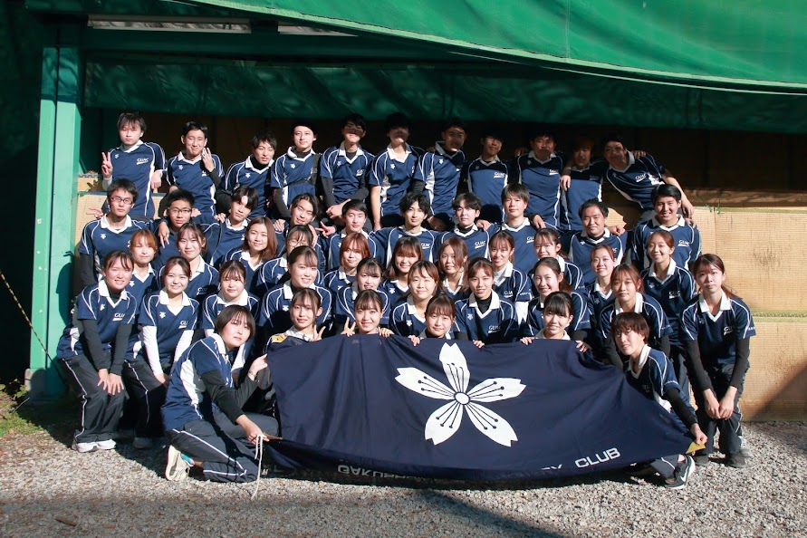

CLUB
MESSAGE
アーチェリーは練習すれば70M離れた場所から的を射抜くこともできます。また、大学から始める人がほとんどなので、努力次第で全国大会にも出場でき、実際に全国大会に出た部員はアーチェリー未経験者、しかも高校の時は運動部ではない人もいます。運動が苦手な人でも問題ありません。
練習はやっぱりキツイの？と疑問に思うかもしれませんが、私たちは王座決定戦出場という目標を掲げているので、練習はきちんとします。しかし、最初は上級生が丁寧にレクチャーしますし、練習も週3回からで大丈夫です。
私たちも部活と遊び、勉強、バイトをちゃんと両立しています。また、アーチェリー部の良いところは、運動部にもかかわらず、部員みんなが仲良し！部内の雰囲気はとても良いです。アーチェリー部に入部したきっかけは部活の雰囲気が良かったから、先輩がとても良い人だったからという声も多いです。4年間という長い大学生活を、私たちと一緒にアーチェリーで楽しみませんか？
HISTORY
学習院大学アーチェリー部は、日本のアーチェリー界の黎明期ともいえる昭和32（1957）年5月に、樺山庸夫先輩（昭 34経）他数名で「弓道部」再建を発起しました。ご指導いただいた全日本弓道連盟教士の小沼英治先生は、アーチェリーが持つ日本人に適合した新しい魅力に興味をお持ちになり、研究もされておられました。その折り「これからの時代は、洋弓も取り入れてみてはどうか」とのアドバイスをいただき、和弓・洋弓を併せた「弓道愛好会」として昭和34（1959）年、大学当局より正式に認められました。アーチェリーといえばロビンフッドのイメージしか思い浮かばなかった時代に、進取の気性に満ち溢れた諸先輩のご努力により、アーチェリー部（昭和42（1967）年、部に昇格）の母体となる愛好会が誕生しました。
ACHIEVEMENT
男子
関東リーグ一部所属
第二回全日本学生アーチェリー男子王座決定戦 準優勝
第三回全日本学生アーチェリー男子王座決定戦 準優勝
第九回全日本学生アーチェリー男子王座決定戦 優勝
女子
関東リーグ一部所属
第一回全日本学生アーチェリー女子王座決定戦 優勝
第二回全日本学生アーチェリー男子王座決定戦 優勝
第四回全日本学生アーチェリー男子王座決定戦 準優勝
第六回全日本学生アーチェリー男子王座決定戦 優勝
第十五回全日本学生アーチェリー男子王座決定戦 準優勝
第十七回全日本学生アーチェリー男子王座決定戦 準優勝
定期戦
関西学院大学定期戦 男子優勝、女子優勝、新人準優勝
甲南大学定期戦 男子優勝、女子優勝、新人準優勝
PRACTICE
以下の日程の中から三回参加となります。
火：16:20~18:10
水: 16:20~18:10
木: 14:40~16:10
金: 14:40~16:10
土: 14:40~16:20
また、練習場所である射場は毎日8:00~20:00まで空いており、好きな時間に練習に来ることが可能です。
活動人数
男子：35名
女子：38名
計73名で活動しております。
このうち経験者は17名と未経験者が大半をしめております。
新人には、最初の一年マンツーマンでの指導を行うため、初めてでもアーチェリーの基礎をしっかりと身に着けることができます。大学から新しいスポーツを始めたいという方お待ちしております！
